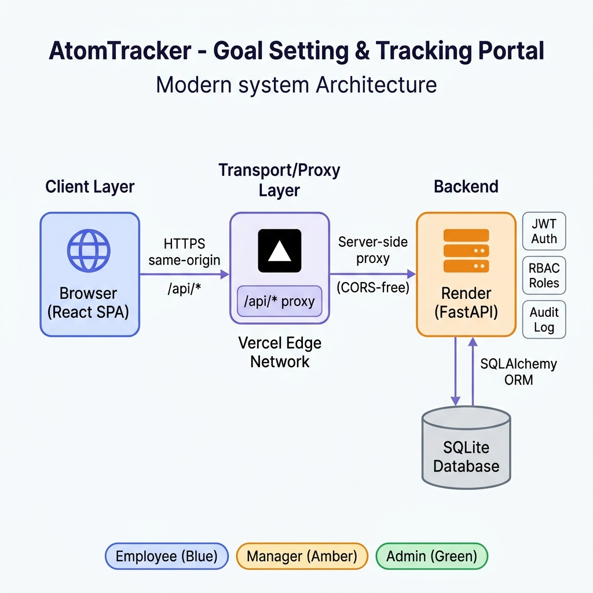
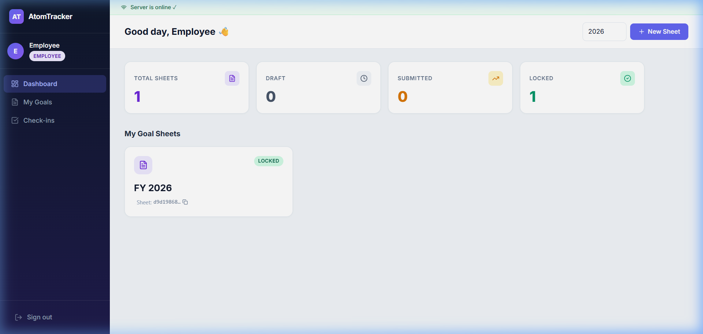
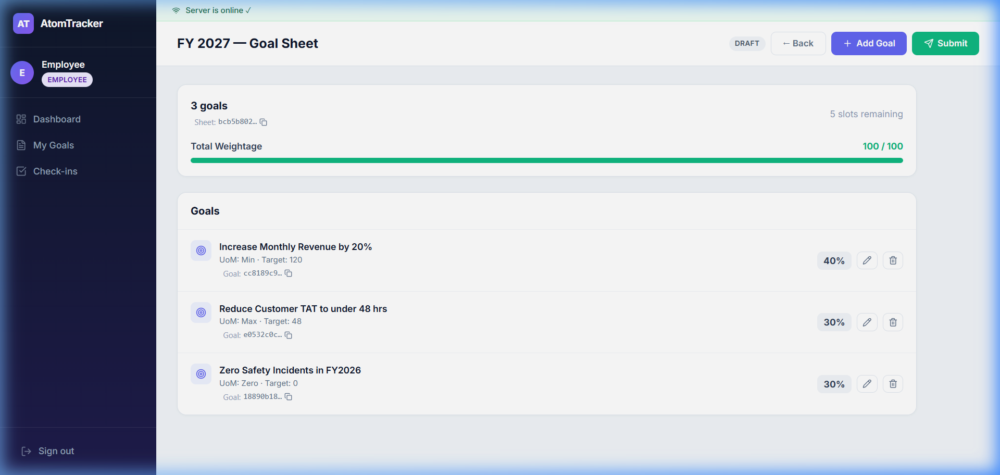
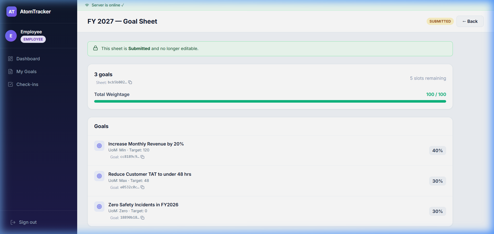
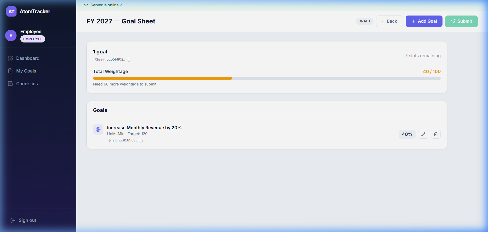
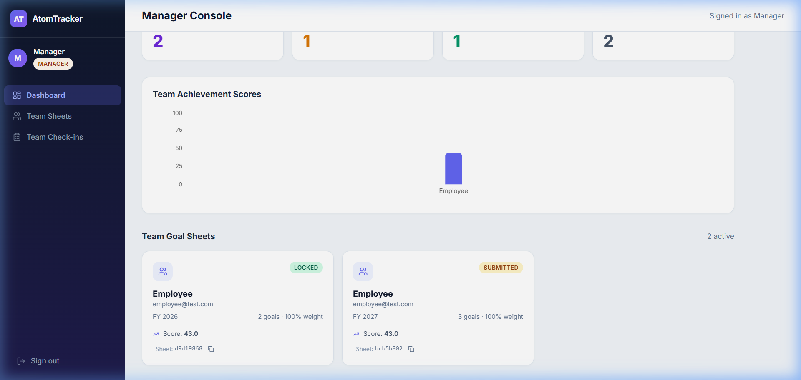
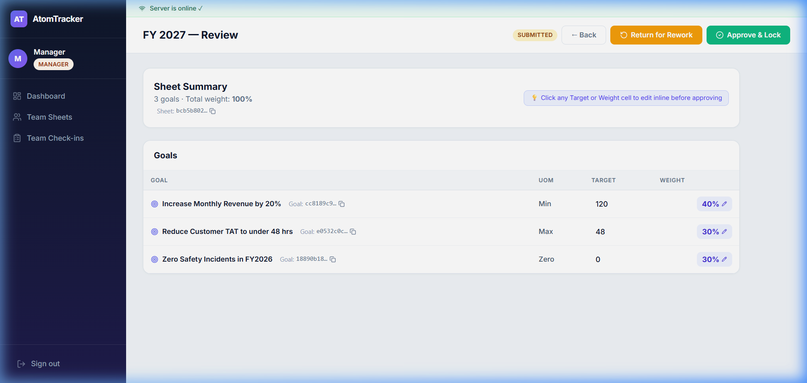
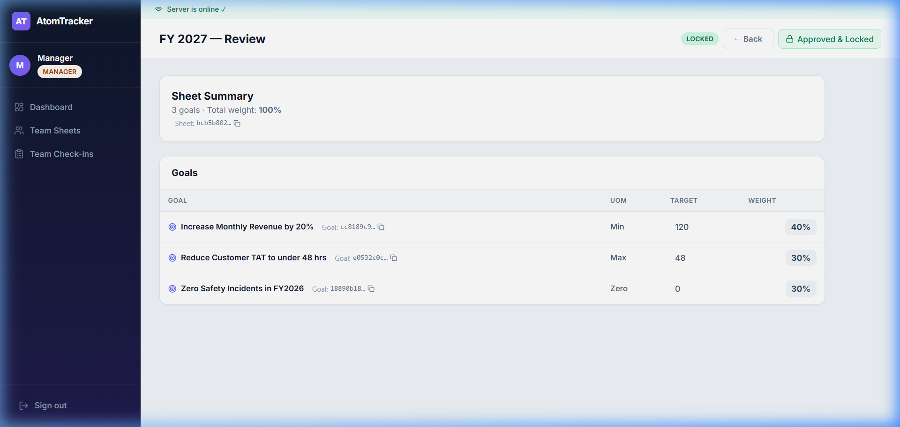
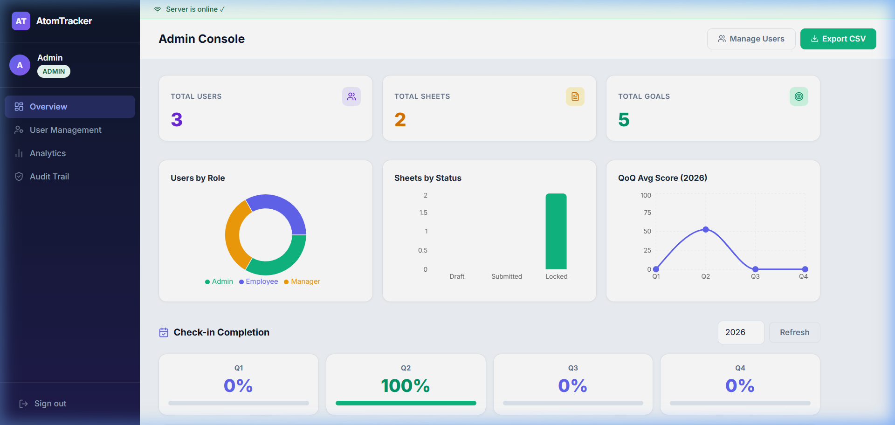
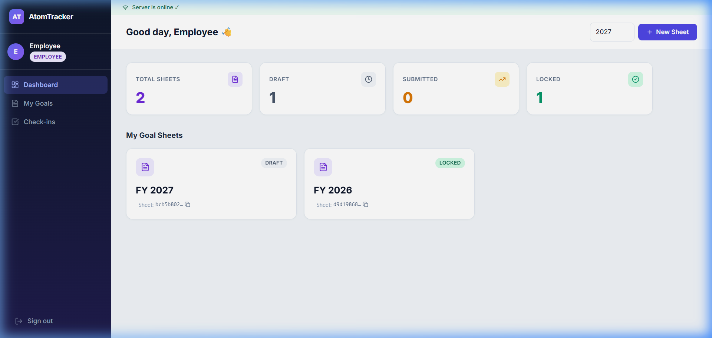

1 Live Links & Repository
⚠️ First load may take ~30 seconds. The backend runs on Render's free tier which sleeps after inactivity. The app automatically retries — just wait and it will come online.
Demo Login Credentials
admin@test.com / admin Adminmanager@test.com / manager Manageremployee@test.com / employee EmployeeThe login page also has one-click quick demo login buttons for each role. The Employee is pre-linked to the Manager so the full approve → check-in → feedback flow works immediately.
2 Problem Statement & Solution
Atomberg's goal-setting process relied on fragile Excel spreadsheets — inconsistent formats, no weight validation, no audit trail, and no way for managers to review or provide feedback digitally. The challenge was to build a structured, digital replacement.
What AtomTracker Solves
🎯 Structured Goal Setting
Employees create annual goal sheets with up to 8 goals. Total weight is enforced at exactly 100% before submission. Supports Min/Max/Zero/Timeline UoMs with automatic scoring.
✅ Manager Approval Workflow
Managers review submitted sheets, can inline-edit target/weight before approving, approve & lock them, or return with a comment for rework. Full round-trip in the UI.
📊 Quarterly Check-ins
Once locked, employees log Q1–Q4 actuals. Scores are computed automatically per UoM. Managers can add per-check-in feedback comments.
🛡️ Tamper-Evident Audit Trail
Every change (approve, reject, override, cascade, check-in) is recorded with old/new values, timestamp, and actor. Admin can search by any entity UUID.
🔗 Shared / Cascaded Goals
Admin can cascade a primary goal to multiple employees. Copies are read-only linked — actuals sync automatically from the primary owner. No duplicate data.
📈 Analytics Dashboard
Admin sees org-wide charts: users by role, sheets by status, QoQ average score trend, and per-employee quarter completion matrix. Exports to CSV.
3 Architecture Diagram

How It Works
| Layer | Technology | Role |
|---|---|---|
| Frontend | React 19 + Vite 8 + Tailwind v4 | SPA served from Vercel's global CDN |
| Proxy | Vercel Rewrites (/api/*) | Forwards API calls to Render server-side — eliminates CORS entirely |
| Backend | FastAPI + Uvicorn on Render | Stateless REST API with JWT auth and role-based access control |
| Database | SQLite via SQLAlchemy 2 | Zero-config for hackathon; Postgres-ready via single env-var swap |
| Auth | PyJWT (HS256) + bcrypt | Signed 12-hour tokens; role enforced server-side on every request |
Key Architectural Decisions
| Decision | Rationale |
|---|---|
| JWT in Authorization header | Stateless server, no CSRF surface, trivial cross-client usage |
Vercel proxy /api/* → Render | Eliminates CORS preflight issues with Render's free-tier cold starts |
Single AuditLog table with (entity_type, entity_id) | One audit pattern for all entities — extensible with zero new migrations |
source_goal_id self-FK for cascaded goals | Single row of truth; copies proxy the primary's actuals automatically |
Upsert check-ins on (goal_id, quarter) | Latest actual wins; history preserved in audit trail |
4 Feature Coverage
| Requirement | Status | Endpoint |
|---|---|---|
| Three roles (Employee / Manager / Admin) with RBAC | ✅ | auth.require_role |
| Up to 8 goals per sheet, min weight 10, total = 100 | ✅ | POST /sheets/{id}/goals, POST /sheets/{id}/submit |
| Manager approves and locks the sheet | ✅ | POST /sheets/{id}/approve |
| Manager returns sheet for rework with a comment | ✅ | POST /sheets/{id}/reject |
| Manager inline edits target/weight before approval | ✅ | POST /goals/{id}/override |
| Quarterly check-ins with auto-computed scores per UoM | ✅ | POST /goals/{id}/checkins |
| Manager comments on a specific check-in | ✅ | POST /checkins/{id}/comment |
| Shared / cascaded goals (actuals sync) | ✅ | POST /goals/{id}/cascade |
| Admin override of locked goals with audit trail | ✅ | POST /goals/{id}/override |
| Completion dashboard (per-employee × quarter matrix) | ✅ | GET /completion |
| Full audit trail (per entity + system-wide) | ✅ | GET /audit-logs, GET /audit-logs/{id} |
| Achievement CSV export report | ✅ | GET /reports/achievements.csv |
| Org analytics (users by role, sheets by status, QoQ trend) | ✅ | GET /analytics, GET /analytics/qoq |
5 Live Demo Screenshots
All screenshots taken from the live production deployment at https://atom-tracker-rust.vercel.app
👤 Employee Role




👥 Manager Role



🛡️ Admin / HR Role


6 Tech Stack
Frontend
Backend
7 Repository Structure
atomtracker/
├── backend/
│ ├── main.py # FastAPI app, CORS, startup migration
│ ├── auth.py # JWT creation/validation, RBAC helpers
│ ├── models.py # SQLAlchemy models (User, GoalSheet, Goal, CheckIn, AuditLog)
│ ├── database.py # Engine, session, startup migrations
│ ├── routes_goals.py # /sheets, /goals, /checkins endpoints
│ ├── routes_checkins.py# /completion, /team-analytics, progress
│ └── routes_admin.py # /users, /analytics, /audit-logs, /reports
│
├── frontend/
│ ├── src/
│ │ ├── App.jsx # Routes (Protected, role-based)
│ │ ├── Layout.jsx # Sidebar, server status banner
│ │ ├── LoginPage.jsx # Auth + quick demo login
│ │ ├── EmployeeDashboard.jsx
│ │ ├── SheetDetail.jsx # Add/edit/delete goals, submit
│ │ ├── EmployeeCheckin.jsx # Log quarterly actuals
│ │ ├── ManagerDashboard.jsx
│ │ ├── ManagerSheetDetail.jsx # Approve/reject/override
│ │ ├── ManagerCheckin.jsx # View actuals, add comments
│ │ ├── AdminDashboard.jsx # Analytics, audit, cascade
│ │ ├── UserManagement.jsx # CRUD users
│ │ └── api.js # Fetch wrapper with retry logic
│ └── vercel.json # SPA routing + /api/* proxy
│
└── docs/
├── architecture_diagram.png
└── screenshots/ # 10 live demo screenshots
atom-tracker-rust.vercel.app · github.com/dharmendra26-wiz/AtomTracker